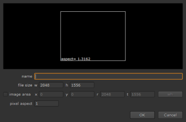
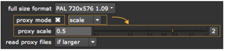

When compositing with Nuke, you can work in two different modes: the full-size mode or proxy mode. In the full-size mode, images are read in exactly as they are on the disk, and all positions are in actual pixels in these images. This is the mode you want to use for accurate feedback and when rendering the final output.
In proxy mode, instead, a proxy scale factor is used. All images and all x/y positions are scaled by this factor. This produces the same (or at least very similar) composite at a different scale. For example, you can use a fraction of the full output resolution to speed up rendering and display calculation.
In addition to the above, a separate proxy file can also be read in place of a full-size image, provided you have specified one in the relevant Read node. This can further speed up the preview, by using a smaller image that reads faster and also saves time by not needing to be scaled. For more information, see Read Nodes and Proxy Files.
The proxy settings you define in the project settings affect both the proxies Nuke generates using the proxy scale factor and proxies read from files. Below, we discuss setting a proxy format and/or a proxy scale and defining how Read nodes use proxy files.
NOTE: Note that proxy versions of images are only used if you have activated the proxy mode. When the proxy mode is off, Nuke always uses the full-res files.
In the Project Settings panel, you have the option of defining a proxy format and/or a proxy scale that you use in the proxy mode.
For the proxy format, you can define the image resolution as well as additional information about offsets and pixel aspect ratio. When using the proxy format, the scaling is proportionate to the full-size/proxy format relationship (not scaled to the proxy format).
For the proxy scale, you only define a simple scale factor by which your images are scaled down whenever the proxy mode is activated. For example, you can use the scale factor of 0.5 to scale your images down to half the size.
If you like, you can define both a proxy format and a proxy scale, and then choose which one to use in proxy mode. A proxy scale is easier to set up, but a proxy format gives you more control over the low-res versions of your images. Below, we first describe how to set up proxy formats and then how to define a proxy scale.
| 1. | If it’s not already open, select Edit > Project Settings (or press S) to display the Project Settings panel. |
| 2. | If you want to use a proxy format (rather than a proxy scale) whenever the proxy mode is activated, select proxy mode > format from the dropdown. |
| 3. | From the proxy format dropdown menu, select the resolution to use while working to speed things up. Notice that your images are not scaled to this resolution, but the scaling is proportionate to the full-size/proxy format relationship. Nuke divides the proxy format width by the full-size width and uses the result as the scale factor. |
If the proxy format you want to use is not in the dropdown menu, select new. The New format dialog displays.

• In the name field, enter a name for the new format.
• In the file size fields, define the width and height of the format.
TIP: You can type formulas in numeric fields to do quick calculations. For example, if your full-size format width is 4096 and you want your proxy format width to be 1/2 of that, you can enter 4096/2 in the New format dialog’s file size w field and press Enter. Nuke then calculates the new width for you.
Click OK to save the format. It now appears in the dropdown menu where you can select it.
| 4. | To activate the proxy mode and use the low-res format for calculations and display, check proxy mode. |
Alternatively, you can use the proxy toggle in the Viewer controls, or press Ctrl+P (Cmd+P on a Mac). For more information, see Using the Viewer Controls.
| 1. | If it’s not already open, select Edit > Project Settings (or press S) to display the Project Settings panel. |
| 2. | Select scale from the dropdown in the Project Settings. |
| 3. | Using the proxy scale input field or slider, specify the factor by which you want to scale the width and height of your images. For example, if you want to scale them down by 50%, use the value of 0.5. |
| 4. | To activate the proxy mode and use the low-res format for calculations and display, check proxy mode. |

Alternatively, you can use the proxy toggle in the Viewer controls, or press Ctrl+P (Cmd+P on a Mac).
As an alternative to letting Nuke generate proxies on the fly, proxy files can be specified using a second file name in the Read nodes (for how to do this, see Loading Image Sequences). If you don’t have a proxy file, you can create one by activating the proxy mode and rendering your full-size images using a Write node (see Rendering Output in the Previews and Rendering chapter).
The proxy file does not need to match the proxy resolution in use. Depending on your project settings, either the full-res or proxy file is scaled to the required proxy size (that is, the size calculated by taking the full-size format and scaling it by the current proxy settings). However, if your proxy images match your typical proxy settings, you can save this time.
| 1. | If it’s not already open, select Edit > Project Settings (or press S) to display the Project Settings panel. |
| 2. | From read proxy files, select when to use the proxy file (rather than the full-res file) in a Read node: |
• never - Never use the proxy file in the proxy mode. Instead, scale the full-size file as necessary.
• if larger - Use the smaller of the two images if it is larger or equal to the desired size, scaling down as needed. Otherwise, use the larger one, scaling down or up as needed. This is the default option.
• if nearest - Use the image that is closest to the desired size, scaling up or down as needed.
• always - Always use the proxy image in the proxy mode, scaling it up or down as necessary.
The option you choose affects all Read nodes in your script, provided that a proxy file is named and the proxy mode is on.
It is worth mentioning here that when a script is rendered in proxy mode, processing is done at the proxy scale and image output goes to the file name in the Write node’s proxy field. If you do not specify a proxy file name, the render fails with an error. It never resizes the proxy image, and it does not write the proxy image over the full-size one.
For more information, see Rendering Output in the Previews and Rendering chapter.
If you find it necessary to render a comp at higher than the original resolution it was intended for, you can also use the proxy resolution to scale up from the root full size format. For example, you could use a 2K composite to produce 4K or higher images in the proxy mode.
The reason you'd probably want to do this is because the comp you did needs to be re-run at higher resolution for a different output target and possibly with some new higher resolution elements. For example, you may need to re-render with new CG elements at print resolution rather than for film out, but you don’t want to go through your script and modify everything that has an x/y position.
When scaling up the output of a script in the proxy mode, image generator nodes render at the larger size, larger images can be specified in the proxy field, and as with scaling down, all x/y positions are scaled to the proxy output resolution.
If you have previously set up your script to use small proxy files, you do not have to remove these. Make sure read proxy files in Project Settings is set to anything other than always, and Nuke reads the larger original files and scales them up.
If you actually have larger proxy files, you should enter them into the Read nodes’ proxy field, and set read proxy files to anything other than never. Nuke then uses these larger files in the proxy mode. For maximum quality, these should be at exactly the desired proxy size so that no scaling is done to them. For example, if the required proxy size (defined by the project settings) is 4K, then the proxy image should be exactly 4K. Otherwise, Nuke scales it to match the project settings, which reduces the quality.
To render the larger output of a scaled-up script, you need to activate the proxy mode and enter a file name in the proxy field of the Write nodes. The larger images are then written to these files.
It’s usually smart to work in proxy mode because most operations work quickly and more efficiently under the low-res display. You can switch between low- and high-resolution when you need greater precision (for example, when pulling a key or tracking), or when you’re ready for final rendering.
| 1. | Click on an empty area of the Nuke window. |
| 2. | Press Ctrl+P to toggle the display mode (Cmd+P on a Mac). |
Nuke automatically scales script elements - Bezier shapes, B-spline shapes, paint curves, garbage masks, tracking curves, and so on - to keep the original placement on the image.
|
|